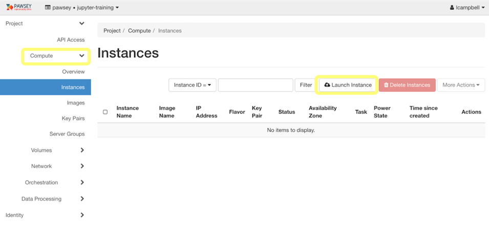
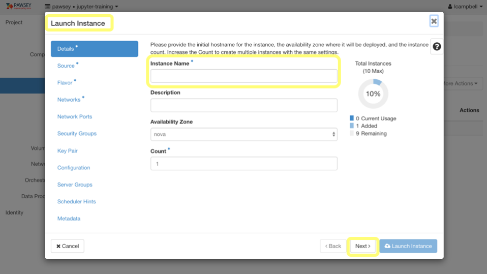
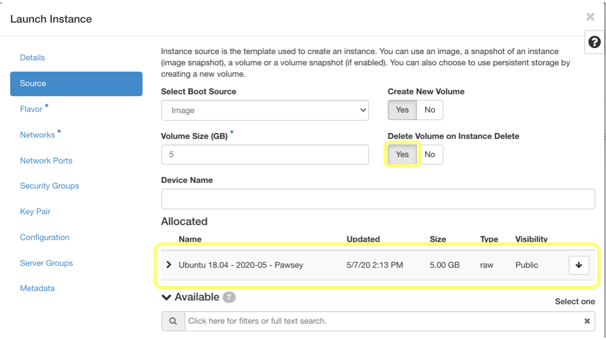
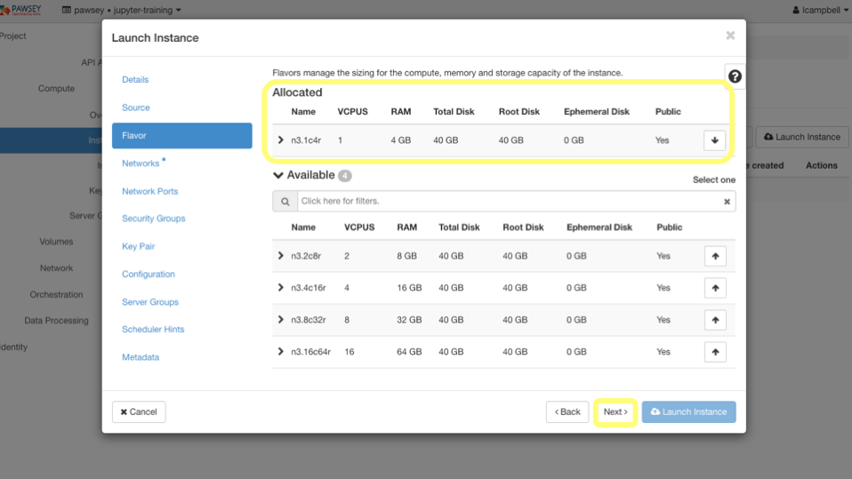
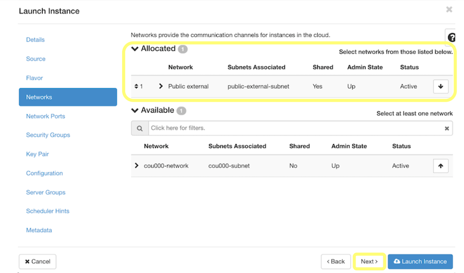
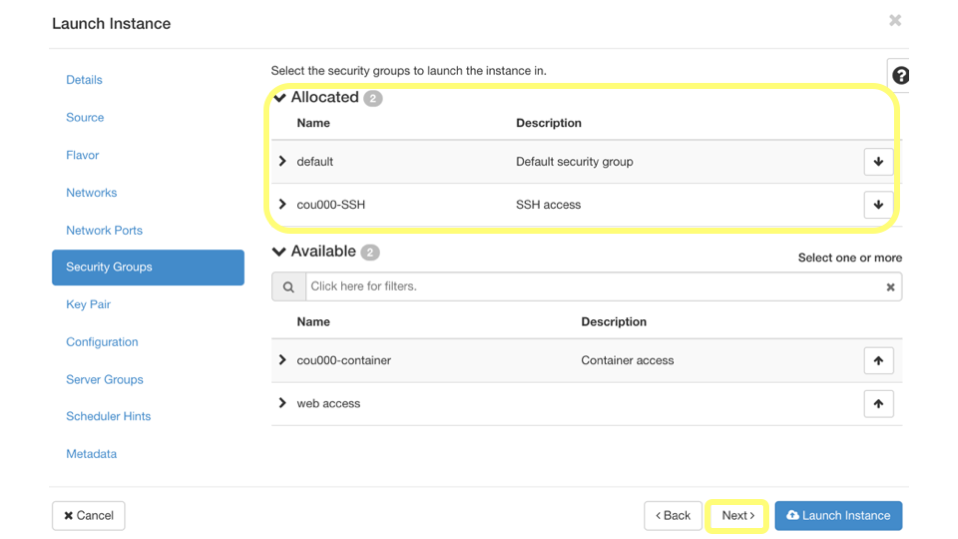
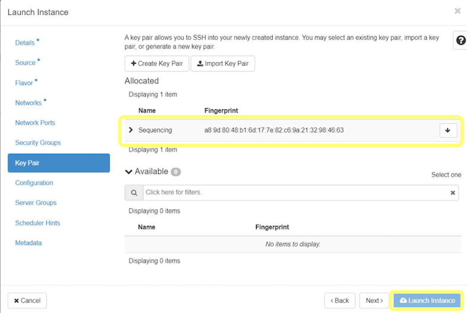
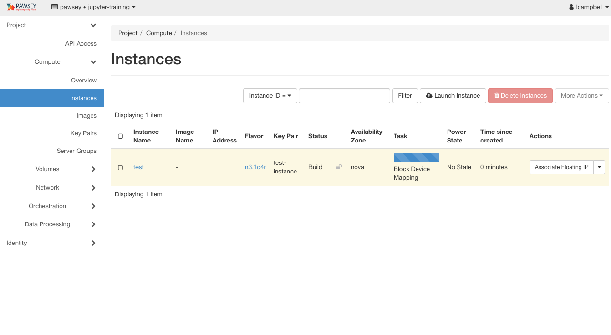
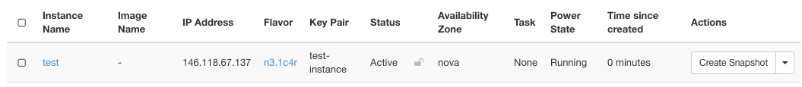

Instance Creation
Overview
Teaching: 5 min
Exercises: 30 minQuestions
How do I set instance preferences and options?
How do I launch a configured Nimbus instance?
Objectives
Describe the overall process of launching a Nimbus instance.
Be able to successfully reproduce the steps to create an instance.
This episode steps you through the process of launching an instance on Nimbus. You use the Nimbus dashboard to complete the process, navigating to various panels from the lefthand menu. Prior to launching the instance at the end of the process, you will determine instance preferences and options, including the “flavor” most suited to your project.
Activity: Create an Instance
1. Start the process
Login to the Nimbus dashboard. From the left hand menu select Compute then Instances. Click on the Launch Instance button.

2. Choose a Name
Clicking on Lauch Instance brings up the Launch Instance window. Configuration options are listed by topic in the menu on the left. These can be progressed through sequentially via the navigation buttons on the bottom right, or can be selected by clicking directly on the desired topic. The initial step is to give your instance a name. It doesn’t matter what you call it; usually we recommend giving your instance a name related to the task it will be performing. Then click Next.

3. Choose a source image
The selection of the Source Image defines the operating system that will be used to launch your instance. We include a selection of commonly used images, as well as curating some of our own (marked with Pawsey in the name).
Note: Selecting a GPU image will not allocate you a GPU if you were not allocated one as part of your project.
Boot Source should be Image, and Delete Volume on Instance Delete should be set to Yes.
For training we will be using the Pawsey Ubuntu 18.04 image. Click the up-arrow to the right of the image name so that it moves from the Available section to the Allocated section as shown below. The Volume Size will be set by default to match your choice of image. Then click Next.

4. Select a flavor
A ‘flavour’ (or ‘flavor’ because our software prefers US spelling) defines the characteristics of an instance. We provide a range of flavors that vary based on the number of virtual CPUs, memory, and storage available to your instance.
In our example we select n3.1c4r.

5. Select a network
The Network tab is where you will define the networking available to your instance.
If you remember, when we talked about the Nimbus dashboard in episode 2, we saw that the Network area had usage, even before we set up or launched a new instance. This is because Nimbus projects come with a pre-configured network, meaning you are not required to configure a network yourself in order to have a working instance. If you require a custom configuration for more advanced use, you can configure your own or ask for our assistance.
When using a training account you will see a default network named something like cou010-network. If you are using your own project you will see a network name similar to this.
You will also see a Public external network. We will use this now since you get a public IP address automatically.

6. Check security groups
We skip over Network Ports at this stage, as they are only for more advanced use of an instance. Instead go straight to Security Groups.
The security group called default is selected already, and you should leave it like that. It allows outgoing connections from your instance, and communication between your instances if you need more than one.
Nimbus projects are preconfigured with a security group to permit incoming SSH access. This is required by most users. The security group to add is named something like cou010-SSH.

7. Select a key pair
The key pair provides secure access to your instance. When selected for an instance, the public key is installed during creation of the instance, thereby ensuring access is only given when you have the corresponding private key.
Note: If you select a key pair for which you do not have, or have lost, the private key, it is not possible to gain access to the instance. Your only option is to delete the instance, create a new key pair, and begin again.

8. Launch instance
Having completed your selection of instance preferences, click the Launch Instance button. The launch window will close, and you should see a new instance show up in your instances panel (probably the only item you see listed). You will see it change state as it starts up.

When the launch process is complete, your instance details should look something like this:

What did we do?
- Gave our instance a name
- Selected an operating system source image
- Provisioned our instance by selecting a flavor of memory, CPUs, and storage
- Gave our instance access to the outside world by selecting the public external network
- Selected a security group to allow SSH access
- Selected a key pair so we can login to our instance
- Created our instance
Key Points
You use the Nimbus dashboard to select preferences and options for your instance based on project needs.
It is important to select a key pair for which you have the private key file, as you require it to access your instance.
It is important to select the default security group as well as one which enables incoming SSH access (your access).